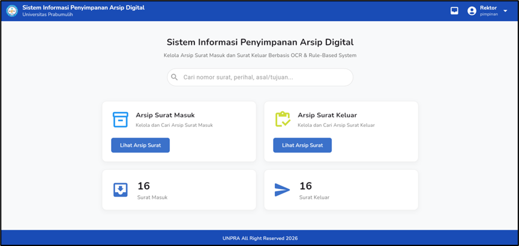
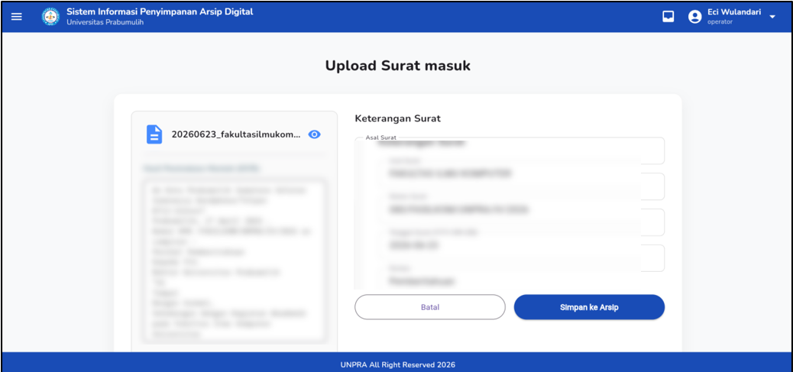
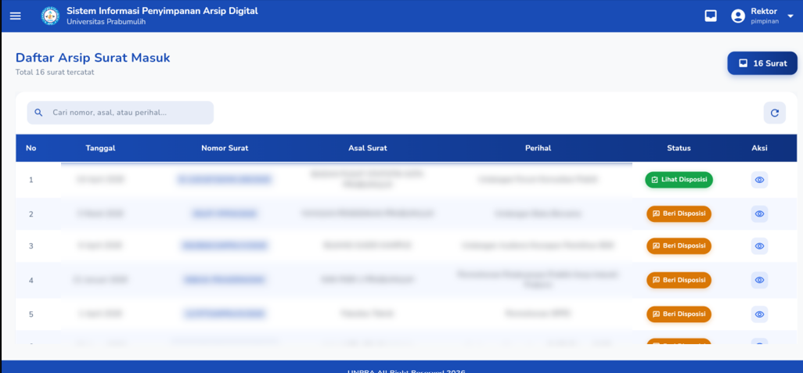
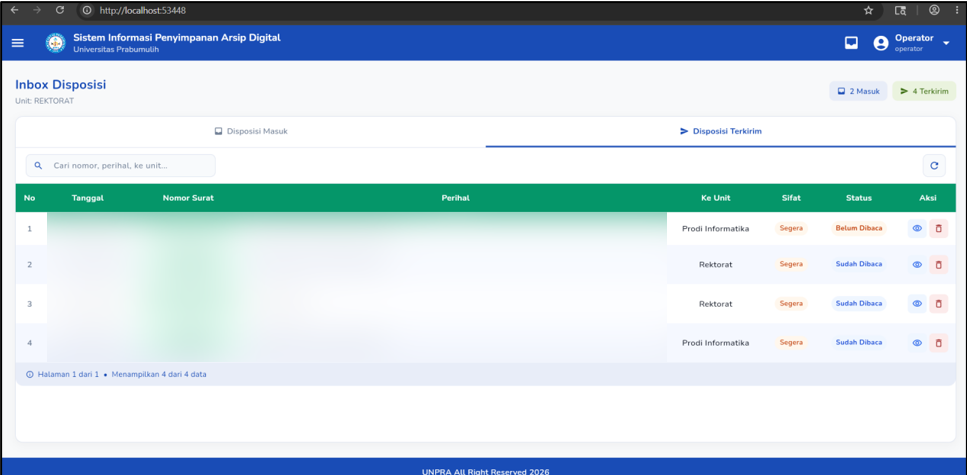

UNDERGRADUATE THESIS PROJECT
SIPARIS
Digital Archiving Application Based on OCR and Rule-Based System
A web-based digital archiving application developed to support the management of incoming and outgoing correspondence through digital document storage and information extraction.
Developed the application end-to-end, including interface design, backend services, database integration, OCR integration, rule-based processing, authentication, document management, and disposition features.
Authentication and role-based access, digital archiving, OCR-based information extraction, rule-based processing, document search and retrieval, and disposition management.



